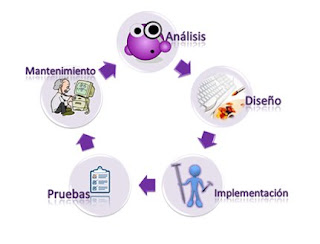

|
|
|
|  |
Es necesario comprender la naturaleza del proyecto, por lo general lleva tiempo entender lo que desean los clientes en especial cuando ellos mismos no saben por completo que quieren.
Los proyectos requieren documentación dese el principio, puede que esta documentación sufra muchos cambios, por tal motivo desde el inicio se debe disponerse de un estrategia para mantener los documentos que se generen. (Gestión de la Configuración)
Se debe reunir los requisitos que ha de cumplir la aplicación, es decir hablar con el cliente
Analizar el problema, diseñar la solución y codificar los programas
El producto inicial y final debe probarse en forma exhaustiva en todos sus aspectos.Ya entregado el producto, sigue el modo mantenimiento donde incluye reparaciones y mejoras.